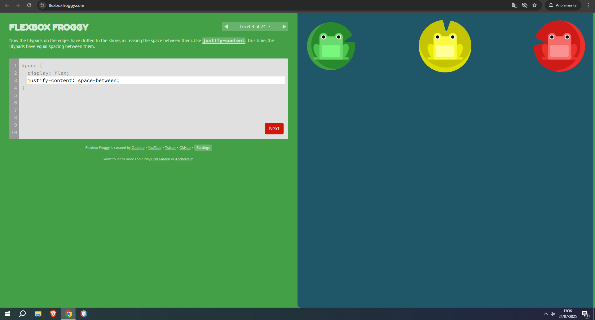
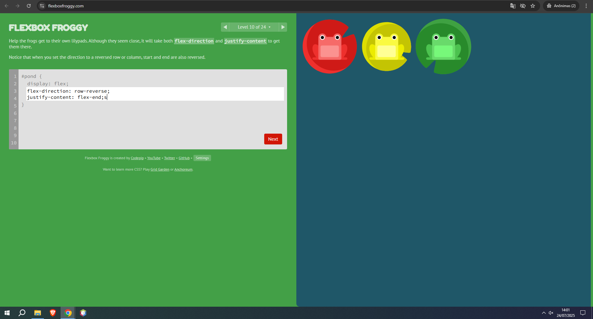

Nome completo: Lívia Oliveira Cunha
Link: https://flexboxfroggy.com/
Justificativa: Escolhi esse jogo porque ele é visual, didático e divertido. Os comandos são aplicados na prática e mostram resultados imediatos, o que me ajudou a entender o posicionamento dos elementos com Flexbox.
Link: https://codingfantasy.com/games/flexboxadventure/play
Justificativa: Esse jogo é como uma história em formato de RPG, o que torna a experiência de aprender mais envolvente. Ele introduz os conceitos de Flexbox em desafios que exigem lógica e criatividade.
Nível 3: Tive dúvida neste nível porque era necessário usar a propriedade justify-content, e existiam várias opções como flex-start, center, space-between, entre outras. Como os personagens estavam muito afastados, fiquei confusa sobre qual valor usaria para distribuí-los corretamente em cima dos alimentos. Depois percebi que a distribuição ideal era space-between, para que um personagem fosse para o canto esquerdo e o outro para o canto direito, alinhando-se exatamente sobre a comida.
Nível 5: Esse nível também me deixou na dúvida porque parecia parecido com o anterior, mas o espaço dos lados tava diferente. Testei space-around, mas os personagens não ficaram com o mesmo espaço dos dois lados. Aí vi que o space-evenly deixava tudo bem equilibrado: ele coloca o mesmo espaço antes do primeiro personagem, entre eles, e depois do segundo.
Nível 10: Esse nível me confundiu porque os personagens estavam em linha, mas os inimigos estavam em cima uns dos outros. Eu tentei usar o justify-content e o align-items, mas nada mudava do jeito que eu queria. Depois de pensar um pouco, percebi que o problema não era o alinhamento, e sim a forma como os personagens estavam organizados, que era em linha e precisava ser em coluna. Aí entendi que tinha que usar flex-direction: column;.
Nível 10: Foi desafiador entender a diferença entre `justify-content` e `align-items`, pois os sapos não iam para onde eu esperava. Precisei revisar o conceito de eixo principal e eixo cruzado.
Nível 16: A combinação de propriedades confundiu um pouco. Usei `align-items: flex-end` com `justify-content: space-around` e tive que testar várias vezes até entender como o espaço era distribuído.
Nível 24: Esse nível exige o uso conjunto de várias propriedades ao mesmo tempo (`flex-direction`, `justify-content` e `align-items`). Foi o mais completo e difícil.
justify-content ou align-items que centraliza os itens.justify-content que distribui os itens com espaço entre eles.Se eu estivesse criando um menu de navegação para um site, usaria Flexbox para alinhar os botões de forma organizada e responsiva. Por exemplo, com justify-content: space-between, os itens do menu ficariam distribuídos com espaçamento igual entre eles, deixando o layout limpo. Caso eu quisesse centralizar todos os itens no meio da barra de navegação, usaria justify-content: center. Se fosse necessário alinhar os itens à esquerda ou à direita, usaria flex-start ou flex-end, respectivamente.